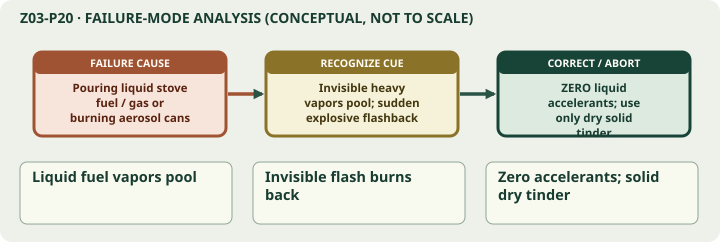

Z03-P20 · Fire and ignition · New manuscript
Reject liquid accelerants, aerosol cans and explosive fire starters
Prevent flash burns, vapor explosions and uncontrollable wildfire ignition by never pouring liquid fuels on campfires.
When it applies · All outdoor campfires, grills and emergency fire-starting situations.
Equipment · Approved dry tinder and commercial solid fire starters only; keep liquid stove fuels sealed and separate.

Actions
- Never pour gasoline, camp stove white gas, kerosene, alcohol or lighter fluid onto open flames, warm coals or unlit wood—invisible vapors pool and flash explosively back to the container.[C03, C15, C02]
- Never toss empty or partial pressurized fuel canisters, aerosol cans or sealed containers into a campfire or hot ashes; trapped pressure ruptures violently with shrapnel and fireball risk.[C15, C02, ED]
- Use only dry natural tinder or purpose-made solid fire starters (such as wax-impregnated tabs) matched to your lawful site and ignition tool.[C03, C11]
Failure recognition · Squirt-squeezing stove fuel onto smoldering wet logs to speed ignition, igniting fuel vapors around hands and clothing.[C03, C15]
Verify · Confirm all liquid stove fuels and pressurized canisters remain capped and stored well away from the fire ring.[C03, C15, ED]
Stop or change course · If liquid fuel accidentally spills near a fire site, do NOT ignite anything there; evacuate the vapor zone and use a different safe site or no-fire plan.[C15, C02, C08]
Evidence and editorial notes
- C02 · USDA Forest Service / Smokey Bear · Smokey Bear’s Campfire Safety Guide (agency PDF)
- Section: Build your campfire; choose a location · Conditions: Where campfires are currently permitted
Support: Use an established fire ring where required or available. Protect the area from nearby combustible materials, avoid windy conditions and keep water ready.
Limitations: Site clearances vary by fuel load, slope, and wind; no universal safe radius fits all terrain. · Conflicting evidence: None; aligns with USFS-FIRE.
Editorial note: Grounds site-selection and ring-preparation procedures. · Specialist reviewer: Fire prevention and land management
Primary source · checked 2026-11-24 - C03 · USDA Forest Service / Smokey Bear · Smokey Bear’s Campfire Safety Guide (agency PDF)
- Section: Build your campfire > Tinder, kindling, fuel · Conditions: Outdoor authorized campfire
Support: Dry tinder, small kindling and larger fuel serve different roles. Gather materials before ignition. Avoid accelerants.
Limitations: Species availability and moisture content vary by season and local collection rules. · Conflicting evidence: None; separates material function from unverified species claims.
Editorial note: Used to stage three-tier fuel geometry without prescribing specific live trees. · Specialist reviewer: Fire prevention
Primary source · checked 2026-11-24 - C08 · NWS · What To Do If You're Caught in a Winter Storm (current web edition)
- Section: Outside > If there is no shelter nearby · Conditions: Stranded outdoors during a winter storm
Support: Seek shelter and block wind and wet exposure. Reduce heat loss from contact with snow or ground.
Limitations: Does not guarantee overnight survival without adequate insulation or rescue. · Conflicting evidence: None; reinforces no-fire exposure control priority.
Editorial note: Anchors no-fire fallback when ignition fails or is banned. · Specialist reviewer: Cold-weather shelter specialist
Primary source · checked 2026-11-24 - C11 · NPS · Ten Essentials (current web edition)
- Section: Fire and illumination · Conditions: Outdoor emergency kit
Support: Carry a dependable ignition option and protect it from moisture. Carry a separate light.
Limitations: Disposable butane lighters lose vapor pressure in freezing cold; matches fail when damp. · Conflicting evidence: None; supports redundant dry ignition kit planning.
Editorial note: Keeps lighting independent of fire-building. · Specialist reviewer: Field equipment and fire prevention
Primary source · checked 2026-11-24 - C15 · NPS · Wildland Fire Safety (current web edition)
- Section: Wildland Fire Safety > Campfires and Stoves · Conditions: Outdoor cooking with portable liquid or canister stoves
Support: Operate stoves on level cleared ground away from tents and dry fuels, cool completely before refueling, and move away from any spilled fuel before lighting.
Limitations: Fuel canisters behave differently in cold weather and high elevation; follow manufacturer limits. · Conflicting evidence: None; aligns with CPSC-C and USFS-FIRE.
Editorial note: Governs stove setup, refueling isolation, and spill failure recognition. · Specialist reviewer: Portable appliance safety and fire prevention
Primary source · checked 2026-11-24
Source lineage · Smokey Bear guide and NPS fire safety; new manuscript · Classification · New manuscript.